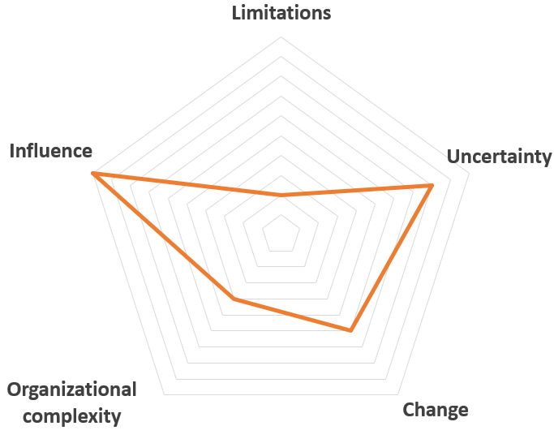

TPK 5100 website
Questions/quiz
About
Home
Question 1: What is central in a rearrangement project?
People and work processes
The main delivery is usually a report which results in a continuation of the project
Different types of limitations that which demands project management and planning
A change in processes and systems
Submit
Correct answer: A.
For the full definitions and descriptions see chapter 1.1 in "The road to success" by Bassam Hussein.
Next question
Question 2: What is the definition of a stakeholder?
Individuals or organizations that are involved, or has an interrest for the project
Person of group that are influenced by or than can influence the project
All individuals that can contribute to the sucess or failiure of the project
All of the above
Submit
Correct answer: D.
There are various definitions to what a stakeholder is. The Project Management Institute in Atlanta defines a stakeholder like this: "A stakeholder is an individual or organization involved in the project, or with interests that may be affected by the projects or its results. Stakeholder may also include those who can affect the projects goals or results". For further definitions see chapter 3 in "The road to success" by Bassam Hussein.
Next question
Question 3: What has to be done in stakeholder management?
Map and identify stakeholders
Analysis of the stakeholders
Implementation of strategies for communication with each stakeholder
All of the above
Submit
Correct answer: D.
Stakeholders management consists of three main tasks:
1) Map and identify the stakeholders.
2) Analyse stakeholders, which is about identifying the relations between each stakeholder and the project.
3) Implementation of strategies for communication with each stakeholder or stakeholder category.
To read more about the topic, see chapter 3 in "The road to sucess" by Bassam Hussein.
Next question
Question 4: What is central in a product developement project?
A change in processes and systems
Developement, optimalization, and representation of the product
Different types of limitations that which demands project management and planning
The main delivery is usually a report which results in a continuation of the project
Submit
Correct answer: B.
For the full definitions and descriptions see chapter 1.1 in "The road to success" by Bassam Hussein.
Next question
Question 5: In which two main categories do we divide stakeholders?
Interest and non-interest
Influence and interest
Influence and non-influence
Investors and shareholders
Submit
Correct answer: B.
Stakeholders are divided along two axis:
1) Stakeholders with the ability to affect the project (apply influence to the project).
2) Stakeholders with interests that get affected.
See chapter 3 in "The road to success" by Bassam Hussein for more detailed description.
Next question
Question 6: What is a rational?
The most important risk factor
A reasonable decision made in a project
An important stakeholder
The trigger factor for initiating the project
Submit
Correct answer: D.
The trigger factor (rational) is the reason for initiating the project. (Chapter 4)
Next question
Question 7: What is a purpose?
A success factor
It describes what the project results are intended for
Projected delivery time
Context between project management success and project success
Submit
Correct answer: B.
Purpose describes what the project results are intended for. This is a brief statement that tells you about the main function of the product, service or result of the project without any reference to how it will be realized. (Chapter 5)
Next question
Question 8: What is central in a construction project?
People and work processes
A change in processes and systems
Different types of limitations that which demands project management and planning
The main delivery is usually a report which results in a continuation of the project
Submit
Correct answer: C.
For the full definitions and descriptions see chapter 1.1 in "The road to success" by Bassam Hussein.
Next question
Question 9: An output describes ...
... what the project results are intended for
... what the project should result in
... what is the most important for a given stakeholder
... what the success factors are
Submit
Correct answer: B.
This is a description of what the project should result in, and may include tangible deliverables, as new components, systems, programs and documents, or conceptual deliveries, such as new work processes, new models and concepts. (Chapter 5)
Next question
Question 10: What is an outcome?
It describes the intended beneficial gains
It is the need of the project
The risk faktors of the project
It is the success factors of the project
Submit
Correct answer: A.
Outcome describes intended beneficial gains of the project. It points also into the future and describe the intended outcome of the project on business, operations or end-users. It may include financial gains; gains related to end-user, gains related to operations when the project output deliverables are in use. (Chapter 5)
Next question
Question 11: What is central in an IT-developement project?
Different types of limitations that which demands project management and planning
Developement, optimalization, and representation of the product
People and work processes
A change in processes and systems
Submit
Correct answer: D.
For the full definitions and descriptions see chapter 1.1 in "The road to success" by Bassam Hussein.
Next question
Question 12: Who initiates a project?
The municipality
The project owner
The project manager
All of the above could initiate a project
Submit
Correct answer: B.
The first perspective of the project is the project owner perspective. The project owner is the one who initiates the project and is referred to in project literature as builder, client, customer, principal and the one who orders. The project owner defines the problem which the project shall respond to, defines the purpose of the project and identifies captioned business- and organizational outcome of the project. To read more about this see chapter 4 in ”The road to success” by Bassam Hussein"
Next question
Question 13: When do you define the success of a project?
When you have the output of the project
It is defined at the beginning of the project
Success is defined as the entire life cycle of the project/product
When the stakeholders are satisfied
Submit
Correct answer: C.
The definitions of success has changed from being limited to the implementation phase to include the entire lifecylce of the project and product. (Chapter 6.1)
Next question
Question 14: What is organizational complexity?
Something that makes the project impossible to complete
Something that happens only in building projects
One ore more dimensions that causes complexities or complications in a project
Something that makes the project easier to complete
Submit
Correct answer: C.
The product, result or service which projects with organizational complexity delivers is sometimes very great or composed and consist of many components and sub-deliverables. They require effort from several people, departments and organizational units. To read more about the topic, see chapter 2 in ”The road to sucess” by Bassam Hussein".
Next question
Question 15: What is a spider diagram?
A way to visualize the budget for the project
A summary of the success of the project
A tool used in research projects
A tool for mapping the characteristics of a project
Submit
Correct answer: D.
An example of a filled out spider diagram. See chapter 2 in ”The road to success” by Bassam Hussein" for more information.

Next question
Question 16: What is the purpose of dividing stakeholders into two axis?
A way of mapping the importance of stakeholders
To determine what kind of project it is
To determine how much the project will cost
None of the above
Submit
Correct answer: A.
Stakeholders vary in importance for the project. Therefore they are divided into their ability to affect the project and the amount of interests the stakeholders have that get affected. These two axis make the foundation for the influence-interest matrix.
To read more about this see chapter 3 in ”The road to success” by Bassam Hussein"
Next question
Question 17: What is NOT an example of expectations and associated stakeholders?
Jobs (end-users and unions)
Financial gain (project owner, finance institutions)
Cutting safety standards (HSE-organizations)
Enviromental expectations and demands (enviromental organizations, goverment agencies)
Submit
Correct answer: C.
Dependent on how the stakeholders expectations is full-filled will they determine the project as a success or failure. Therefore it is important to map their expectations. To read more about this see chapter 3 in ”The road to success” by Bassam Hussein".
Next question
Question 18: In which phase do you have the best oppertunity to influence a project?
End phase
Initiation phase
Completion phase
It doesn't matter
Submit
Correct answer: B.
In the inition phase is central targets defined, the projects stakeholders is mapped, their expectations is mapped and how they can contribute to success is mapped. Therefore it is crucial to make good decicions in this phase. To read more about this see chapter 5 in ”The road to success” by Bassam Hussein
Next question
Question 19: What is the difference between "digitization" and "digitalization"?
They are the same concepts.
Digitization is about writing documents on the computer, while digitalization is transferring old documents into a digital archive.
Digitization is about increasing the use of computers in a work process, while digitalization is about learning how to use computer programming.
Digitization is the move from analog to digital, while digitalization is the increased use of digital aids.
Submit
Correct answer: D.
Digitization is defined as the conversion of analog information into a digital format, as in taking a physical document and turning it into a pdf for example.
Digitalization is defined as the adopting or increase in use of digital or computer technology by an organization or industry. It is about creating value in the changing process.
Next
Question 20: What is the advantage of defining success factors at the beginning of a project?
It saves a lot of time and effort later
The initial stakeholders gets to be more influentia to the project
It creates a common understanding of what is expected
It is easier to estimate the cumulative costs of the project early
Submit
Correct answer: C.
There are a lot of advantages to defining the success of a project at the project beginning. For example: Creating a common vision for the project, it creates a frame of reference for the risks involved, it's easier to evaluate the project later, and more.. To read more about this see chapter 6 in ”The road to success” by Bassam Hussein".
Next
Question 21: What is the definition of project success?
The value of the project when the result or product is initiated.
When the stakeholders are satisfied with the result or finished product.
The identified risks have successfully been avoided during the project life cycle.
An increased economic value compared to what was invested
Submit
Correct answer: A.
According to de Wit, project success is an expression for the value of the project when the result or the product is finished and initiated. To read more about this see chapter 6 in ”The road to success” by Bassam Hussein".
Next
Question 22: What is the definition of project management success?
When the stakeholders are satisfied with the result or finished product.
The project has performed according to demands like projected time, cost, and expectations.
The project has performed according to demands like group chemistry, stakeholder management, and sustainability.
The delivery of a finished product or an adequate result.
Submit
Correct answer: B.
According to de Wit, project management success is the ability to preform according to demands like time constraints, projected costs, projected workloads, and/ or fulfillment of the specifications. To read more about this see chapter 6 in ”The road to success” by Bassam Hussein".
Next
Question 23: What is central in a research and developement project?
People and work processes
Developement, optimalization, and representation of the product
Different types of limitations that which demands project management and planning
The main delivery is usually a report which results in a continuation of the project
Submit
Correct answer: D.
For the full definitions and descriptions see chapter 1.1 in "The road to success" by Bassam Hussein.
Next question
Question 24: What is not considered a organizational structure from a project perspective?
Functional structure
Progressive structure
Project structure
Matrix structure
Submit
Correct answer: B.
From a project perspective we generally divide organizational structures into:
1) Functional structure
2) Project structure
3) Matrix structure
The basis of this is the terms "authority" and "coordination responsibility". To read more about this see chapter 8 in ”The road to success” by Bassam Hussein".
Next
Question 25: What does WBS stand for?
Work Based Structure
Worpackage Binary Startup
Work Breakdown Structure
Workload Building System
Submit
Correct answer: C.
A WBS is a Work Breakdown Structure. To read more about this see chapter 9 in ”The road to success” by Bassam Hussein".
Next
Question 26: What is EV?
It denotes the actual accumulated costs
It denotes the estimated accumulated costs
An index of how the project is doing with refards to the scope of the project
An index of the earned value of the work in money, or hours saved.
Submit
Correct answer: D.
EV is a foundation for calculating other variables like CPI, SPI and EAC. These are helpful to have controll on when looking av earned values. See chapeter 10 in "The road to success" by Bassam Hussein for more information.
Next
Question 27: Example time. Lets say that EV is 1000 kr and AC is 500 kr. What is the CPI(cost performance index)?
CPI=AC/EV=500kr/1000kr=0.5
CPI=AC*EV=500kr*1000kr=500000kr^2
CPI=EV/AC=1000kr/500kr=2
CPI=SPI/AC, meaning that we need more information
Submit
Correct answer: C.
See chapeter 10 in "The road to success" by Bassam Hussein for full overview of definitions and how to calculate.
Next
Question 28: What is the focus of risk management-process?
It focuses on describing the processes which is important to be able to conduct sound risk management in projects
It focuses on mapping the risks
It focuses on eliminating the risks
None of the above
Submit
Correct answer: A.
Pinto defines risk management in projects as the art and science to identify, analyze and handle risk factors throughout the entire life cycle to a project to reach it's targets. Many researchers says that moderate level of risk mangement is needed to increase the chanses for project succsess. See chapeter 11 in "The road to success" by Bassam Hussein for more information.
Next
Question 29: hat is benefits with involving the stakeholders in risk identication according to Loosemore?
You build trust
Stakeholders will be able to contribute to decisions which affect their stakes in the project
Stakeholders feel more involved in the decision-making and feel that their stakes are taken into account.
All of the above.
Submit
Correct answer: D.
It is good practise to use several formal ways to identity risk. In this phase it is needed to involve represents from all staekholders. For more benefits from involving stakeholders see chapeter 11 in "The road to success" by Bassam Hussein for more information.
Next
Question 30: What is NOT a prerequisite for a successful risk management?
Domain-competence. Earlier experience and awarness too risk categories in the project.
Not updating on and take into consideration new demands and limits for the project as this will slow the progress of the project.
Updated status information on costs, delays, results from measures, variance and forecasts.
Understanding the projects context, goal and limits.
Submit
Correct answer: B.
B is not a prerequisite for a successful risk management, actually it is opposite and is very important for risk management. There are more prerequisites, see chapeter 11 in "The road to success" by Bassam Hussein for them.
Next